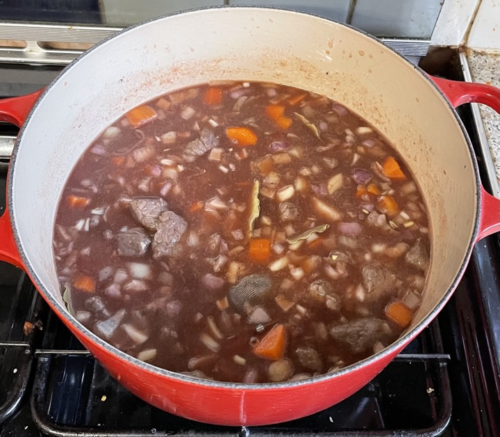
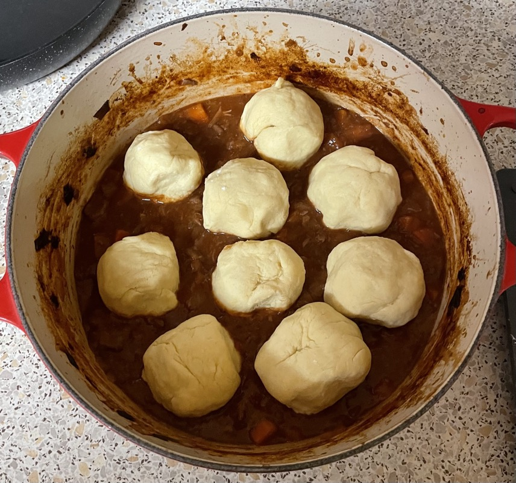
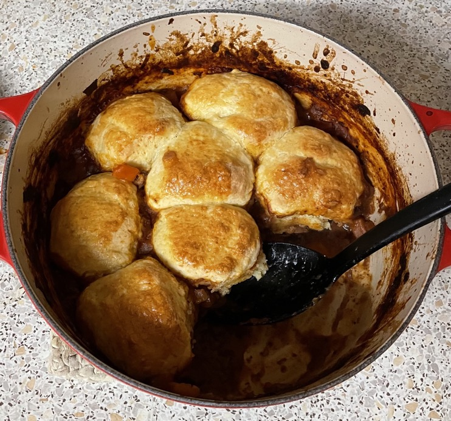

Beef Cobbler
Beef
- Season beef 1 hour before cooking
- Brown 1000g stewing steak in 2 batches so not to crowd pan
- Heat 1 tbsp vegetable oil in pan
- 2 cloves garlic grated (each batch)
- Fry beef for 5 mins until brown
- Transfer to casserole dish
- Deglaze the pan with and reduce
- Pour wine into casserole dish
Stew
- Add to 24cm (4.2l) casserole dish
- 2 carrots half moons
- 1 parsnip diced (optional)
- 1 celery stick diced (optional)
- 10 shallots diced
- beef oxo cube in 300ml water
- 300ml tomato passata
- 4 bay leaves
- 1 star anise
- 1 tsp balsamic vinegar
- 1 tsp light brown sugar
- ½ tsp thyme
- ¼ tsp rosemary
- ¼ tsp fish sauce
- ¼ tsp soy sauce
- Bring to simmer on hob
- Cook in oven at 140°C for 2½ hours
Scones
- Add to bowl
- 200g self-raising flour
- ½ tsp salt
- ½ tsp baking powder
- Blitz to breadcrumbs
- 75g unsalted butter chilled and cubed
- Stir in
- 75g cheddar grated
- 1 tsp English mustard
- Beat separately
- Stir milk into flour mix until soft dough
- Roll into equal 9 slightly flattened circles
Cobbler
- Turn oven up to 200°C
- Remove star anise and bay leaves
- Scrape off surface fat
- Mix together then add
- 1 tsp cornflour
- 2 tsp cold water
- Place scones on top of stew, 2 in middle with 7 surrounding in circle
- Brush tops with egg yolk
- Bake uncovered in oven for 20-25 mins until golden brown
Serving
- Mash / new potatoes
- Mange tout, peas
- Portion 1-2 scones
Notes
- Passata increased to 300ml, water reduced to 300ml
Pics


